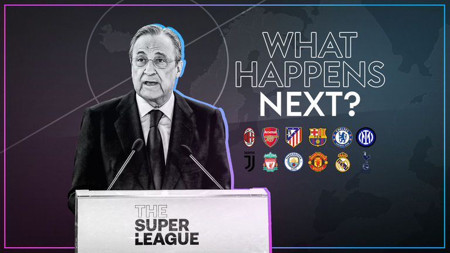

The End of Football? The Week that Football Was Rocked by the European Super Leauge.
“I can’t even think about the game right now... They should all be banned, it’s a disgrace”, Gary Neville said while on co-commentary for the Manchester United vs Burnley game on 18th April. Just half an hour before the match began, news had broken that the “big six” clubs in England had joined the other “big” clubs in Spain and Italy to form a breakaway competition called the “European Super League”. After that game, Gary Neville would give one of the most impassioned rants on British television that had not been seen in the past decade, and this would set the tone for the rest of the week.
The news was not regarded as a “sports” story confined to the back pages but dominated headlines across news channels for the next week and was depicted as an attack not just on football, but on the very foundations of British culture. This stemmed not only from the fact that football was the countries – perhaps the worlds – greatest past time, but also because of who the engineers of this breakaway league were: the owners. Immediately, the owners of the 12 teams were vilified as money hungry billionaires who were only interested in lining their own pockets and viewing football fans as consumers for their business, a complete perversion of what it meant to own a football club. This was particularly the case with Manchester United, Arsenal, and Liverpool, not least because they were the forefront of English football in terms of history and size, and was best put by Gary Neville, who simply said, “they should know better”.
But on top of this, the fans of those big three clubs had a long-standing and completely justified resentment towards their owners due to their handling of their clubs finances. This most prominent was the Manchester United owners, the Glazers, who since taking over the club in 2003 had made hundreds of millions pounds of profit from the club, all the while leaving the club in debt (£443m as of today, but always increasing), where before their arrival, there was none. Arsenal’s owners, the Kroenke’s, were no better. They had a long history of not putting money into the club with a series of transfer windows which saw hardly any money spent, and this was simultaneously occurring while the Kroenke’s other ventures in America were seeing hundreds of millions of dollars pummelled into them. An easily identifiable line between taking money out of Arsenal Football Club and being put into their American businesses, which the Kroenke’s clearly had more interest for, has been picked up by the fans and only increases their resentment towards them.
The exact same can be said for Liverpool’s owners, the Fenway Sports Group, led by John W. Henry. What was the unifying factor between all three owners? They were all American. What where they trying to achieve? A competition that would be more similar to the American baseball and basketball franchises than any football competition. There was a clear attempt to ‘Americanize’ and destroy the soul and heart of football – the “football pyramid”. This is what made the sport so unique, and so enthralling to watch, and has what has made it into the phenomenon that it is today. The fact that minnows or underdogs and beat the big guys, or the fact that a small club can doggedly climb their way up through the divisions via years of hard work. Leicester City miraculously winning the Premier League title with odds over 1000/1 in 2015/16 is the story that stands tall, but the stories of Sheffield United, Southampton, and Bournemouth climbing up from League One into the Premier League, or Swansea City narrowly escaping administration and being promoted into the Premier League eight years later would have been equally joyous for their fans.
All of this was about to be taken away by the owners new format of football which would see the 12 founding teams being permanent fixtures in the competition, and who would not be able to be relegated. This privilege was completely indicative of the owner’s perception on not just sport, but life; we are at the top, and we will stay at the top by removing all competition from the small guys, who will stay at the bottom. By doing so, the owners would be guaranteeing to increase their revenues to around £300 million for each club, a significant increase on the £100 million they were already making from Premier League and TV deals. It would also be an increase for the Italian and Spanish teams, whose TV deals were significantly less than their English counterparts (teams relegated in the Premier League made more money than the winners of the Italian League).
Rivalries were set aside as supporters of all clubs banded together in their opposition to these owners, the gluttonous founding fathers of the Super League. The fact that these owners had plotted amongst themselves over Zoom calls to create a breakaway competition that would see them increase their revenues ten-fold, whilst in the background there was a 14-month pandemic which had witnessed hundreds of thousands lose jobs through redundancies, was despicable to say the least. It was a level of insensitivity, selfishness, and greed that had not been witnessed in any walk of life for some time, let alone sport.
Statements were released from fan groups, broadcasting companies, and clubs outside of the Super League, stating the treasonous act that the owners had committed against the sport. This was all spearheaded by UEFA, perhaps one of the biggest losers of the breakaway competition as this would remove the big clubs from one of their main attractions – the UEFA Champions League, football’s most elite club competition. UEFA warned, some may say threatened is a more appropriate term, to expel these 12 clubs from the Champions League, as well as making their players ineligible for the World Cup, which is run by FIFA.
After a four days of chaos, uproar from fans, and threats from UEFA and other sponsors, there were murmurs that the owners of the clubs had realised their mistake and we ready to withdraw from the Super League altogether. Fans persistently bombarded their clubs social media pages imploring them to announce their departure, or at least release some form of statement. These demands fell on deaf ears for the most part in the early week.
Supporters were outside stadiums with banners and more organised protests were in the works. Chelsea fans were the first to organise a protest with significant numbers as they were the next ‘big six’ team to play at home. Thousands of fans surrounded Stamford Bridge, and former goalkeeper and current staff member Petr Cech went out to calm supporters down. That same hour, the club announced its departure from the Super League. The decision was met by cheers from the Chelsea supporters, as well as gratitude from other clubs. Other fans of the top six clubs demanded their team do the same, and Manchester City would be the next.
Later that day, the European Super League would unravel as all six English clubs would announce their departure. But fans were not entirely grateful. While Manchester City and Chelsea fans, who had good relationships with their owners, were happy with the decision and were willing to forgive, fans of Arsenal, Chelsea, Manchester United, and Tottenham were not so willing. They would not forget that there owners conspired such an outrageously egotistical and self-serving competition without even thinking to ask supporters for their opinion. It all but confirmed the fans perceptions of their owners. That being said, on 22nd April, four days after it was announced, the European Super League had all but caved in and was to be no more. Without the English clubs, the competition had lost a huge part of its persuasion.
Incredibly, the Spanish and Italian teams remained in part of the competition even after all English clubs had announced their departure. Florentino Perez, the Real Madrid President and reportedly the main figure in constructing the Super League, said that they along with Barcelona, AC Milan, Juventus, and Inter Milan would remain part of the competition and it would go ahead. UEFA said that the threat of their removal from the Champions League remained, but the biggest storm had passed. The European Super League was all but finished without the English teams.
But was football saved? Hardly. While there was no ‘Super League’ and the owners did not get their wish of increasing their revenues, the key figures behind the formation of the Super League all remain in position, most painstakingly for Liverpool, Arsenal, Manchester United, and Tottenham fans. They remain in position to do it all over again. There is the suggestion that a 50+1 rule – which is ongoing in Germany currently – would be implemented with the help of the British Government, but this is yet to be seen and is, in all honestly, highly unlikely due to the size and power of the English clubs.
Sky Sports reporter Kaveh Solkehol on the eve of English clubs announcement that they were not participating in the Super League tweeted: “The good guys have won...” But is the events of the Super League’s failure a story of the bad guys losing and the good guys winning? Not really. While it showed the power of fans coming together and that big club owners do not get to decide the way football is run, UEFA and FIFA still do get to decide. The alternative to the breakaway competition is a continuation and development on the Champions League, which in the 2023/24 season will increase participations of the competition from 32 to 48, and will implement a rule where big clubs will stand a chance of qualifying based on involvement with the competition in the previous decade – a very similar concept to the Super League, although not quite the same.
Furthermore, Solkehol’s own company, Sky Sports, were one of the main reasons as to why the Super League came into fruition. It was big broadcasting companies like Sky who paid ridiculous amounts of money for television rights that started the ball rolling on the crazy amounts of money that is flying around in football today. This can all be traced back to the first television deals that were made by in the early 1990, which Sky were not only part of that, but were one of the founding companies to do so. Ever since then, it has been one long road to the events that occurred on 18th April – a breakaway competition made by rich owners with the pure base intention of increasing their revenues and securing their success.